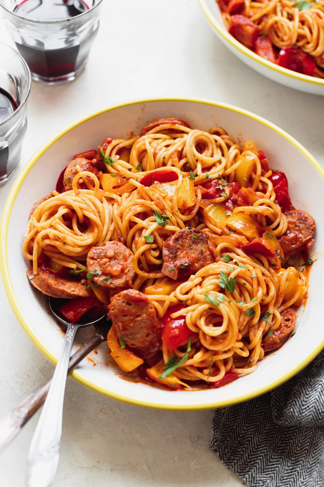

Spaghetti

Spaghetti
Spaghetti is an easy classic but sometimes jarred sauce is not enough. Follow this recipe to learn how to dress up canned spaghetti
Ingredients
- Jar spaghetti sauce
- Onion
- Garlic
- Spaghetti noodles
- Vegetable oil
- Italian sausage
Steps
- Chop onion and garlic
- Heat oil in skillet over medium high heat and begin boiling water
- Cook noodles in boiling water according to directions on box
- Cook onion and garlic in oil for five minutes
- Add italian sausage cook until done in the middle
- Add Spaghetti sauce
- Serve over noodles